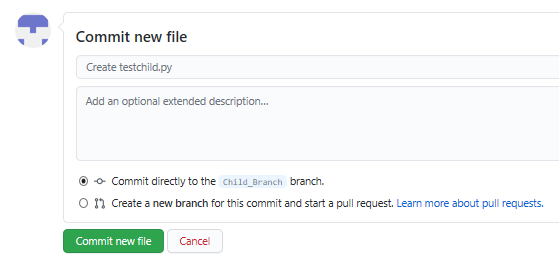
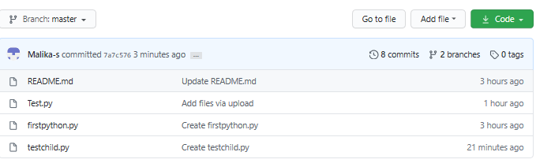

Effort: 20 min
After completing this lab you will be able to:
This hands-on lab requires you to have already created a GitHub account, and added a project to it, as illustrated in the previous lab
You can create or delete branches directly on GitHub.
Step 1: Currently, there is one branch as shown below:
Step 2: On GitHub, navigate to the main page of the repository.
Step 3: Click the Branch selector menu. Enter the name of the branch you want to create and press Enter.
Step 4: Observe that your repository has two branches Master and Child_Branch(check using arrow).
Whatever, is in the master file is copied to the child branch. But when we add a file or edit any file in child branch that will not reflect in the 'Master' branch.
Step 1: Click Add file and select Create New file to create a file in the repository.
Step 2: Provide the file name and the extension of the file. For example, testchild.py and add the lines.
Step 3: Scroll down the page after adding the text. Add a description of the file (optional) and click Commit new file.

The file has added to the child branch.
You can check the master branch now there is no testchild.py file by selecting the Branch selector menu.
Or you can also compare the file as shown below with the option given Compare and pull request.
Step 1: Scroll down the page, you will get 1 file changed
Step 2: Scroll up and create a pull request using the option Create Pull request. In the highlight, you can see the arrow which means that you are comparing and creating a pull request. Add the comments (optional) to create a request.

To accept the pull request, click the Pull Requests tab to see a summary of pending pull requests. If you are happy with the changes, click Merge Pull request to accept the pull request and perform the merge. You can add a comment if you want.
Your request has now merged successfully.
Now, the child branch has completely merged with the Master branch. You can check the Master branch is having the testchild.py file.

In this document, you have learned how to create a branch, edit and commit the changes, open a pull request and merge the request.
Rav Ahuja
| Date | Version | Changed by | Change Description |
|---|---|---|---|
| 2020-07-16 | 0.4 | Malika Singla | Spell check, steps added |
| 2020-07-14 | 0.3 | Rav Ahuja | Changed logo, updated title, intro, objectives, added Effort, Authors and Changelog |
| 2020-07-13 | 0.2 | Malika Singla | Added to GitLab and made some formatting changes, added objectives, etc. |
| 2020-06-30 | 0.1 | Malika Singla | Drafted initial version |